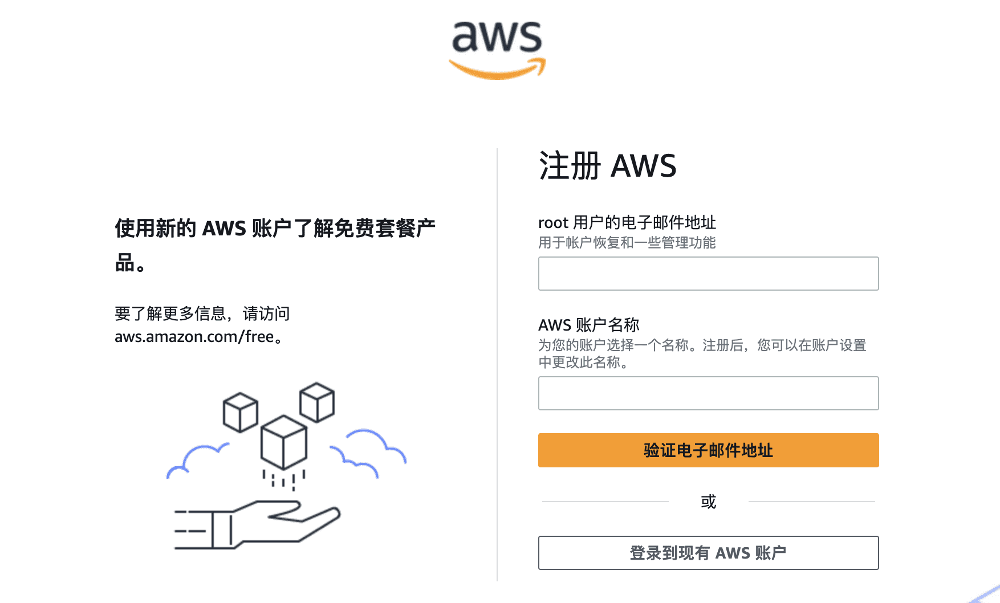
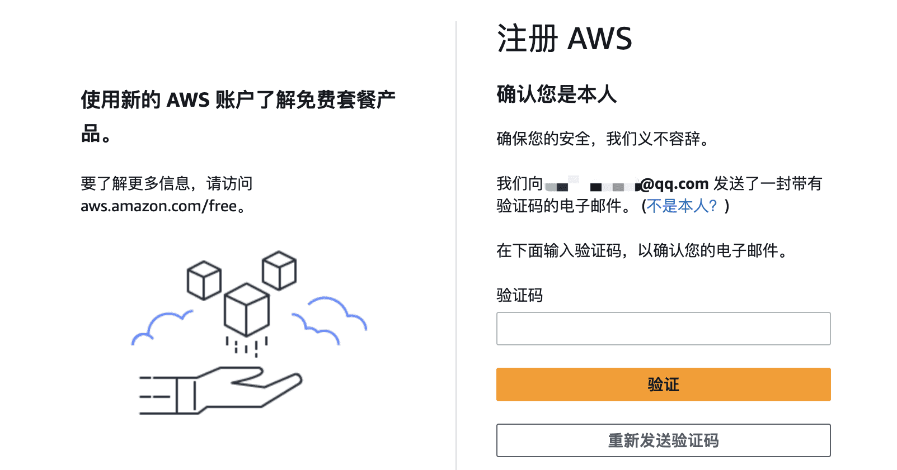
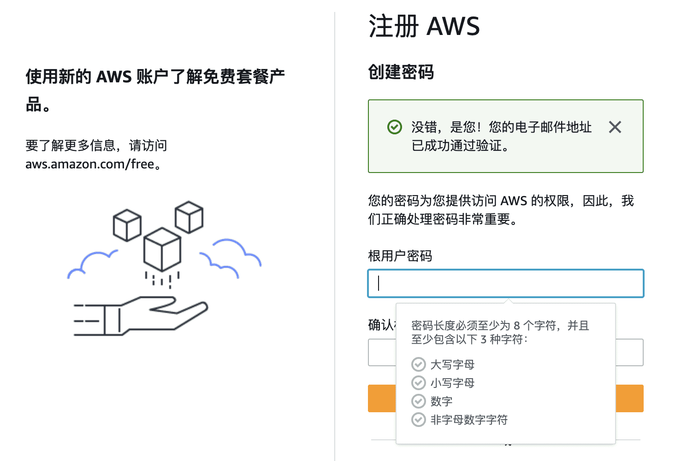
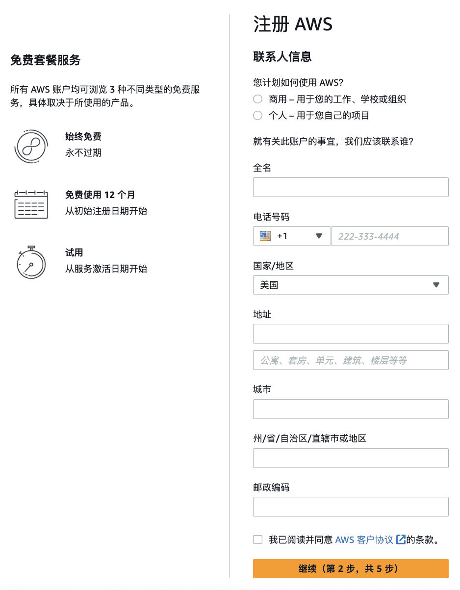
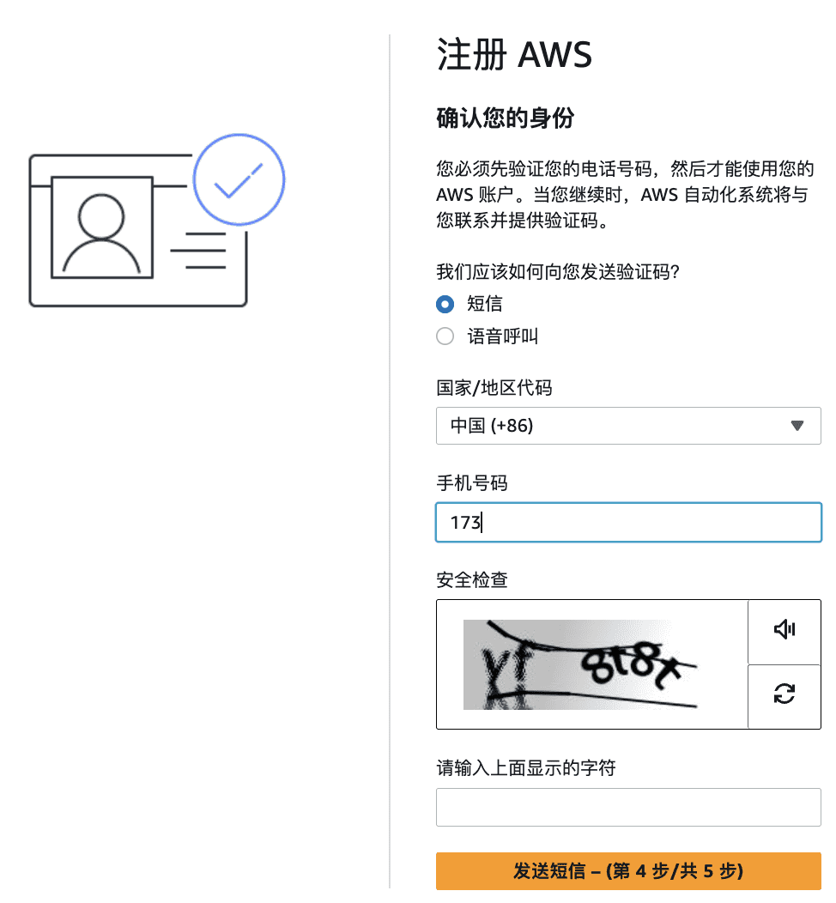
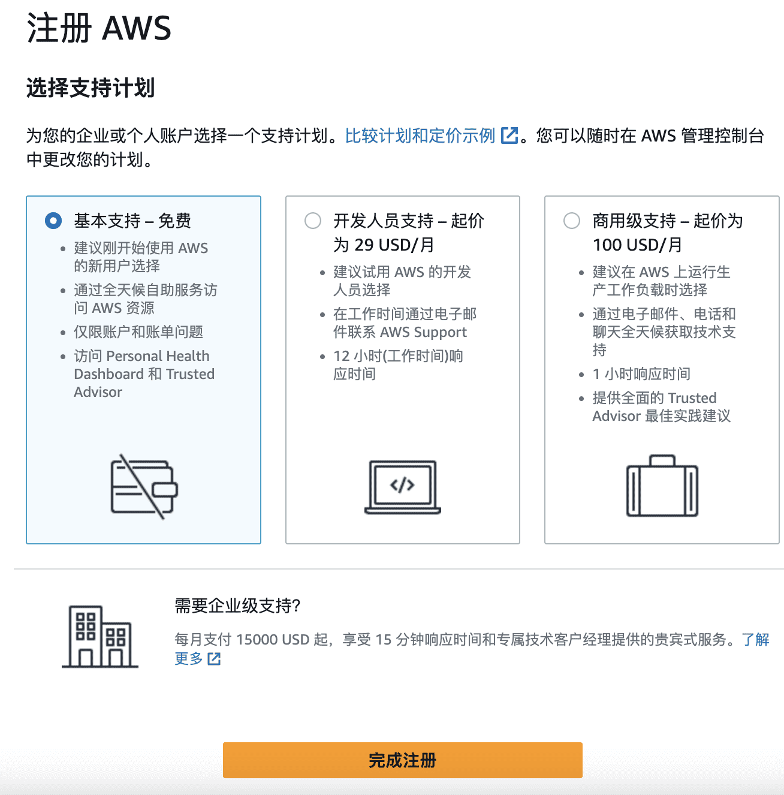
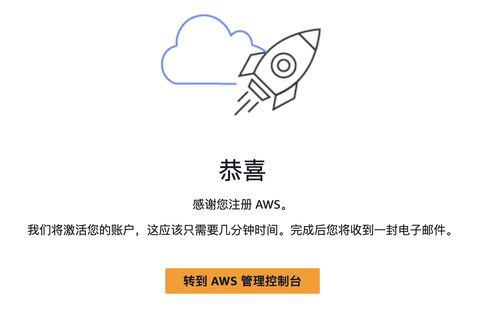

探索 Amazon S3 的无限存储潜力
在数字化时代，数据是企业最宝贵的资产之一。如何安全、高效地存储和访问这些数据，成为了许多企业面临的挑战。亚马逊云服务作为全球领先的云服务提供商，提供了一系列的解决方案来满足不同客户的需求。今天，我们将重点介绍亚马逊云科技的 Amazon S3（Simple Storage Service），一种简单、可扩展且持久的对象存储服务。
1 了解 Amazon S3
Amazon Simple Storage Service (Amazon S3) 是一种对象存储服务，由亚马逊云科技提供行业领先的可扩展性、数据可用性、安全性和性能。你可以使用 Amazon S3 随时在任何位置存储和取回任何数量的数据。
2 免费试用优势
亚马逊云科技为新用户提供了免费试用套餐（12 个月内免费、永久免费等），包括 Amazon S3 在内的多种服务，这里 Amazon S3 时 12 个月内免费。用户可以在 亚马逊云科技海外区域免费试用页面 了解更多详情，并开始免费体验。这不仅降低了用户的入门门槛，也让用户能够无负担地探索和学习亚马逊云科技的云服务。
3 开始使用 Amazon S3
3.1 注册亚马逊云科技账户
要使用 Amazon S3，你需要一个亚马逊云科技账户，如果你没有账户，系统会提示你在注册 Amazon S3 时创建一个。在你使用 Amazon S3 之前，系统不会向你收取费用。
打开 亚马逊云科技账号注册地址，点击右上角创建亚马逊云科技账户。
- 填写邮件地址和账号名称（支持使用国内的邮箱）

- 验证邮件

- 输入密码

- 联系人信息

- 付款信息
接受所有主要信用卡和借记卡（包括 Visa、MasterCard 和 银联信用卡等）

- 验证手机号（支持中国地区国内手机号）

- 选择支持计划

- 完成注册

- 登录亚马逊云科技控制台，登录地址，选择根用户输入电子邮件地址，点击下一步会让输入密码，输入密码后就可以完成登录了。
3.2 访问 Amazon S3 控制台
登录亚马逊云科技管理控制台，然后打开 Amazon S3 控制台。
3.3 创建存储桶
Amazon S3 中的每个对象都存储在存储桶中。你必须先创建一个 S3 存储桶，然后才能在 Amazon S3 中存储数据。

在 Amazon S3 控制台中，点击“创建存储桶”按钮。为你的存储桶命名，并选择一个合适的亚马逊云科技区域。完成设置后，点击“创建”。

3.4 上传文件
创建存储桶后，你可以开始上传文件。选择你的存储桶，点击“上传”，然后选择你想要上传的文件。你可以上传文本文件、图片、视频等任何类型的文件。

3.5 设置权限和访问控制
为了确保数据安全，你可以设置存储桶的权限和访问控制。在存储桶设置中，选择“权限”，然后根据需要配置访问权限。

3.6 管理数据
使用 Amazon S3 控制台，你可以轻松管理存储的数据。你可以查看文件列表、进行搜索、移动、复制或删除文件。

4 结语
Amazon S3 的灵活性和可靠性使其成为存储解决方案的理想选择。无论你是开发者、企业还是个人用户，都可以利用 S3 来满足你的存储需求。立即访问免费试用页面，开始你的亚马逊云科技云服务之旅吧！